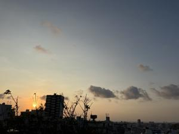
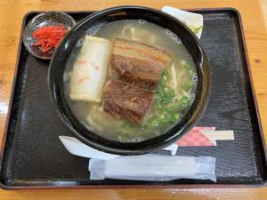
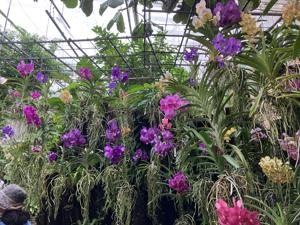

うるがいの話 ある日
最新: アマゾンの届け先【うるがいの話 ある日】とは 一日だけのプログです
『うるがいの話』の最新一日だけのプログで、通信料が少なく経済的だ。カニの画像をクリックすると全ての日付が載る『うるがいの話』サイトを表示します
|
|
【うるがいの話】 うるがい(ｳﾙｶﾞｲ urugai)とは、『もずくがに』の名前でとても大きくなります。 |
|---|---|
|
|
【カミマヤーの話】 猫のことを方言でマヤーといいます。カミマヤー（kamimayaa）とは、神の猫のことです。 |
|
【たながぁの音楽】 たながぁ（ﾀﾅｶﾞｰ tanagaa）とは手長えびのことで、何種類かあり大きいのは車 エビぐらいになります。 |

|
【ぶながぁの話】 ぶながぁ(ﾌﾞﾅｶﾞｰ bunagaa)とは、赤い髪の毛、赤い身体、そして身長は１ｍ２０ｃｍ ぐらい、川の蟹を食べているの目撃された。場所は沖縄県国頭郡大宜味村のと ある村僕の隣近所に住んでいる爺さんから、聞いた話です。 |
|
|
【ギーマの話】 ギーマ(giima)とは、山原の里山に咲くスズランに似た、 花を付けます。実は食べられます、 気が付くと口の周りが紫になっています。 |
2025年10月11日 (土）アマゾンの届け先
21:10

アマゾンでギターの本を注文した、した後、ン、届け先の住所っ
てまさか、お義母さんのマンションにした？。確認すると、まさ
かのまさかで、慌てて自宅の住所に変更する。一昔前マンション
の住所を削除しようと調べたのが、分からず放置した結果だった
。今回は、ＡＩがアドレス帳から削除する方法を教えてくれたの
で無事処理を終える。
入館料のみ（大人（高校生以上）760円、小人（中学生以下）無料）
※令和7年10月11日（土）・12日（日）は無料入館日のため、
入館料無料
[配布数]
各日30鉢
※無料入館日は各300鉢
※お一人様一鉢限りとなります。
これをみたヨメが、熱帯ドリームセンターへ行くと言う。お！、
ついでに近くにあるお寺へ別件で行くことにしよう。ただし、寺
へは昼の１３時の約束、これまでより遅めに家を出る。お盆の時
は、甲子園の決勝で道は混んでいなかったが・・・・・・・・。
海洋博公園への道は、既に混んでいた。寺からの帰りに名護の道
の駅に寄ろうとすると車が縦列、寄るのをやめた。
１１時１４分 『石くびり』で沖縄ソバを食べる

１２時１３分 熱帯ドリームセンターの蘭
